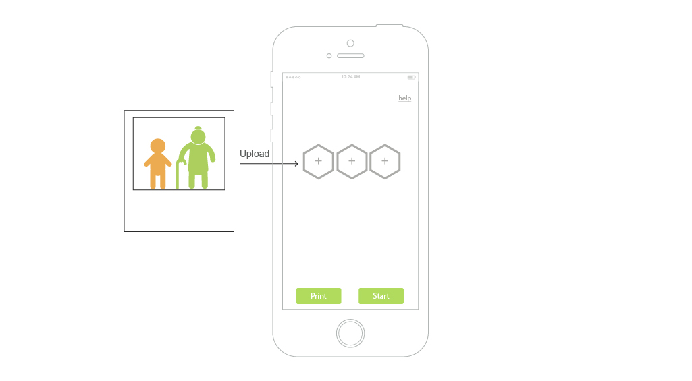
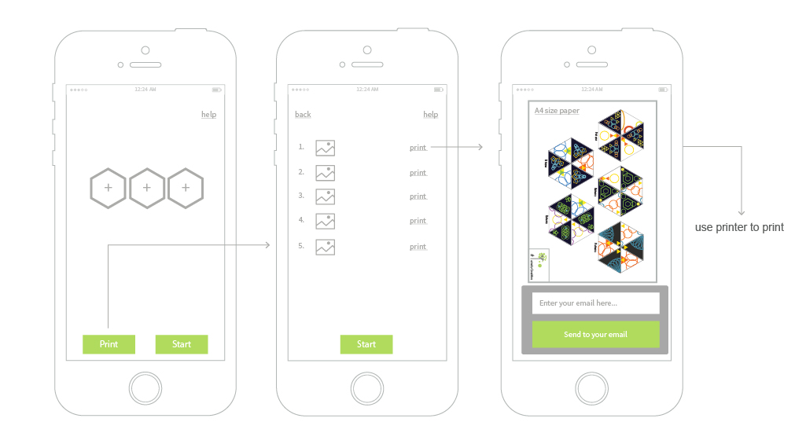
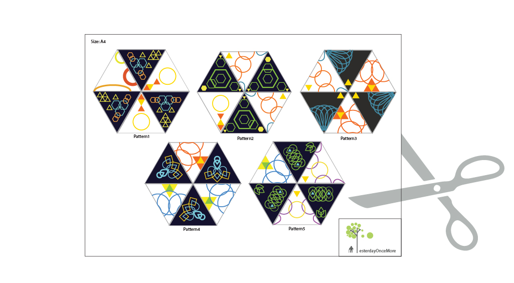
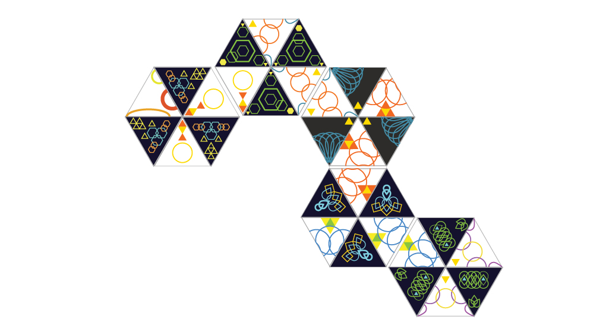
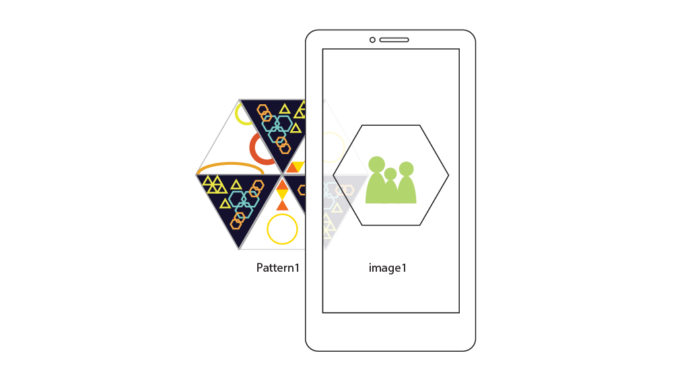

Step 1: 家人将家庭照片上传到手机。

Step 2: 每张家庭照片与一个特定图案联系在一起。用户在应用中输入自己的邮箱，将此图案发送到邮箱中。之后通过打印机将图案打印出来。

Step 3: 用剪刀将图案剪出。

Step 4: 现在终于到了用户使用的时候了。用户可以通过观察每个剪出来的图案，将图案像拼图一样连在一起。这是一个训练脑部以及手部的过程。

Step 5: 图案连接的过程，实际上也是创造记忆时间线的过程。接着只要用户用手机扫描图案，手机中便会显示出与图案对应的记忆图像。用户便可以通过扫描图案回忆自己的时间线，尝试训练脑部与记忆能力。
